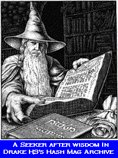

HASH MAG ARCHIVE
Right from Drake H3's birth on 23 January 1984, scribes, under varying degrees of duress, have taken it in turns to record the weird and wonderful events that have taken place connected with our runs. In this archive you will find thrilling tales of heroes and villains, desperate rescues and narrow escapes, and because this is hashing, total incompetence, mayhem and confusion.
Where else could you learn the art of getting lost, find out the location of Shangri-La, attend a trail laying masterclass from an 'expert', discover the truth about conscription into the British Army and get the low down on Internet users?
In order to protect
the public, only hashnames have been used in this archive.
1997
Run No.721 - 08
Sep.1997 - Farewell O Torchless Run, Then (Attrib. A.J.Thribb)
Run No.718
- 24 Aug.1997 - A Great Plantation Run
Run No.703
- 05 May 1997 - IAT And Rudolph Deconstructed
Run No.701
- 21 Apr.1997 - Gun Running At Tolchmoor Gate
Run No.700
- 14 Apr.1997 - The Seven Hundreth Or Seven Hundredth
1996
Run
No.655 - 03 Jun.1996 - A True Story Of Tallow And Gelatine
Run No.645
- 18 Mar.1996 - Ferret's Farce
Run No.642
- 26 Feb.1996 - Deferred Entry Into The Sheeps Tor Triangle
Run No.639
- 05 Feb.1996 - The Run That Never Was
1995
Run No.620
- 11 Sep.1995 - The Cadover Creep
Run No.619
- 04 Sep.1995 - The Quest For The Holy Grail
Run No.615
- 07 Aug.1995 - Lame Excuses At Eastontown
Run No.614
- 31 Jul.1995 - Granny Hill's Escape From Hobnails New Waste
Revenge
Run No.587
- 23 Jan.1995 - The Strange Case Of The Shrivelled Member
1994
Run
No.576 - 31 Oct.1994 - The Monster Hash & Halloween Bash
Run No.561
- 18 Jul.1994 - How I Lost My Virginity
Run No.554
- 31 May 1994 - Ghost Hashers In The Sky
Run No.546
- 04 Apr.1994 - Overcoming Enormous Obstacles....
Run No.542
- 07 Mar.1994 - A Fog & Fibre Diet
Run No.534
- 10 Jan.1994 - Deadly Steps In The Dark
1993
Run No.530 - 13 Dec.1993 -
Donald, Where's My Carbonara?
Run No.507
- 05 Jul.1993 - Toxic Waste And A Load Of Bollocks
Run No.501
- 24 May 1993 - Cuckoos In The Nest
Run No.500
- 17 May 1993 - Bogs, Buses & Binbags
Run No.492
- 22 Mar.1993 - Gatecrashing Yokelbonker's Farewell Party
1992
Run No.476 - 28 Dec.1992 -
More Dart On Dartmoor
Run No.473
- 07 Dec.1992 - Drake Won't Follow Orders
Run No.465
- 28 Sep.1992 - The Soussons Saga
Run No.461
- 17 Aug.1992 - Over The Hills And Far Away
Run No.458
- 10 Aug.1992 - The South Hams Amble
Run No.442
- 13 Apr.1992 - Cursing The Tolchmoor Gate Curse
Run No.433
- 22 Feb.1992 - Stockings & Gymslips In The Strip Club
1991
Run No.428 - 30 Dec 1991 -
Drake Goes Out To Play
Run No.419
- 18 Nov.1991 - Full Of Eastern Promise...?
Run No.417
- 04 Nov.1991 - Bartman And Catwoman In Bantham City
Run No.402
- 21 Jul.1991 - St Trinians And An Agitated Goat
Run No.382
- 04 Mar.1991 - Hang Her Up Hanger Down
1990
Run No.360 - 08 Oct.1990 -
A Round Of Gulf
Run No.359
- 01 Oct.1990 - How The West Was Run
Run No.355
- 03 Sep 1990 - A Surprising, Well Blobbed Run
Run No.346
- 02 Jul.1990 - Megalomania And Gritty Sausages
Run No.334
- 09 Apr.1990 - The Phantom Hitchhiker Disappears
1989
Run No.319 - 26 Dec.1989 -
The Famous Five Have A Smashing Time
Run No.315
- 27 Nov.1989 - Swamped By Greenies
Run No.305
- 18 Sep.1989 - Rampant, Stunning & Nubile
Run No.273
- 13 Feb.1989 - Who'd Have Thought It Would Be Milton Combe Again?
1988
Run No.263 - 05 Dec.1988 -
Minder Escapes From Jail And Goes On The Run
Run No.259
- 07 Nov.1988 - Thanks For The Wembury
Run No.258
- 30 Oct.1988 - From The Elephant's Nest Without The Aid Of A
Safety Net
Run No.234
- 16 May 1988 - The Day We Did It In A Lee Mill Alley
Run No.233
- 09 May 1988 - Just Swanning Around Devonport
Run No.229
- 04 Apr.1988 - We Plough Through Fields And Scatter
1987
Run No.208 - 23 Nov.1987 -
Battling Our Way Through Modbury
Run No.192
- 24 Aug.1987 - Bloodnock & Cream Soda's Magical Mystery
Tour
Run No.181
- 08 Jun. 1987 - A Successful Enlargement Operation
Run No.168
- 02 Mar.1987 - Drake Explores The Ocean
Run No.163
- 26 Jan.1987 - Deadly Dries Up
1986
Run No.154 - 01 Dec.1986 -
Come On Baby Light My Torch
Run No.145
- 29 Sep.1986 - Tales Of Falling Down
Run No.134
- 14 Jul.1986 - Dominated By Dogs
Run No.133
- 07 Jul.1986 - The Worst Run In History
Run No.116
- 10 Mar.1986 - Some Light Relief
| < on back |